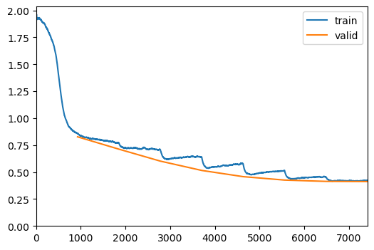
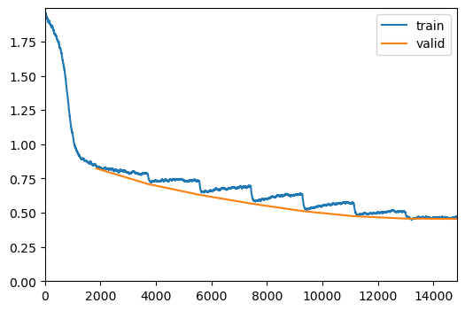

url = 'https://raw.githubusercontent.com/MenshikovDmitry/TSU_AI_Course/main/module_1.%20Recommender%2BDevOps/dataset/'
files = ('ratings_train.dat ratings_test.dat movies.dat users.dat').split()
d = FastDownload()Embeddings
Simple embedding model
paths = L(d.download(url+f) for f in files); paths(#4) [Path('/home/slakter/.fastdownload/archive/ratings_train.dat'),Path('/home/slakter/.fastdownload/archive/ratings_test.dat'),Path('/home/slakter/.fastdownload/archive/movies.dat'),Path('/home/slakter/.fastdownload/archive/users.dat')]df, df_test = read_movielens(paths[0],paths[2]), read_movielens(paths[1],paths[2])
df.head()| userId | movieId | rating | title | |
|---|---|---|---|---|
| 0 | 3539 | 2478 | 5 | Three Amigos! (1986) |
| 1 | 1358 | 2478 | 1 | Three Amigos! (1986) |
| 2 | 2565 | 2478 | 1 | Three Amigos! (1986) |
| 3 | 4819 | 2478 | 2 | Three Amigos! (1986) |
| 4 | 5763 | 2478 | 1 | Three Amigos! (1986) |
ds = TfmdDataset(df)Subset
Subset (ds, indices)
Initialize self. See help(type(self)) for accurate signature.
train, val = RandomSubsetSplitter(train_sz=0.7, valid_sz=0.3)(ds)dls = DataLoaders.from_dsets(ds, Subset(ds,val), bs=1024)Model with user and movies embeddings
EmbeddingDotBias
EmbeddingDotBias (n_factors, n_users, n_items, y_range=None)
Same as nn.Module, but no need for subclasses to call super().__init__
model = EmbeddingDotBias(50, len(ds.user_map), len(ds.movie_map), y_range=(0,5.5))
model = torch.compile(model)
learn = Learner(dls, model, loss_func=MSELossFlat())learn.fit_one_cycle(8,6e-3, wd=0.1, cbs=[ShowGraphCallback()])| epoch | train_loss | valid_loss | time |
|---|---|---|---|
| 0 | 0.858459 | 0.827388 | 00:37 |
| 1 | 0.769316 | 0.712607 | 00:31 |
| 2 | 0.707936 | 0.601813 | 00:27 |
| 3 | 0.639462 | 0.515328 | 00:26 |
| 4 | 0.575776 | 0.457725 | 00:20 |
| 5 | 0.515399 | 0.425978 | 00:19 |
| 6 | 0.455623 | 0.413787 | 00:24 |
| 7 | 0.423113 | 0.412248 | 00:20 |

RMSE loss
ds_test = ds.test_ds(df_test)torch.sqrt(learn.get_preds(dl=TfmdDL(ds_test, bs=512), with_loss=True)[2].mean())
0.00% [0/98 00:00<?]
TensorBase(0.8460)Adapter for api
EmbedAdapter
EmbedAdapter (device=None)
Adapter for embedding model to support api for collaboritive filtering with matrix
model = EmbedAdapter()model.fit(ds, n_epoch=1, cbs=[ShowGraphCallback()])model.fit(ds, n_epoch=8, cbs=[ShowGraphCallback()])| epoch | train_loss | valid_loss | time |
|---|---|---|---|
| 0 | 0.842268 | 0.823293 | 00:15 |
| 1 | 0.779737 | 0.709927 | 00:15 |
| 2 | 0.729909 | 0.630949 | 00:16 |
| 3 | 0.690915 | 0.567139 | 00:15 |
| 4 | 0.632658 | 0.512022 | 00:15 |
| 5 | 0.570096 | 0.474448 | 00:15 |
| 6 | 0.505491 | 0.457023 | 00:16 |
| 7 | 0.469349 | 0.454841 | 00:15 |

model.save('../models/embed/model.pt')
ds.save('../models/embed/ds.pt')xb, yb = to_device(dls.one_batch())model.predict(xb,yb)[1]tensor(0.4622, device='cuda:0')movs = tensor([ds.encode([s])[0] for s in ds.movie_map if 'star wars' in s.lower()] + [1, 2, 3])[2:]
rats = tensor([5] * (len(movs) - 3) + [1] * 3, dtype=torch.float)
movs, rats = to_device((movs, rats))ds.decode(model.recommend(movs,rats,10)[1]).pprint()Star Wars: Episode IV - A New Hope (1977)
Star Wars: Episode I - The Phantom Menace (1999)
Raiders of the Lost Ark (1981)
Soft Toilet Seats (1999)
Indiana Jones and the Last Crusade (1989)
X-Men (2000)
Dazed and Confused (1993)
Superman (1978)
Batman: Mask of the Phantasm (1993)
Star Trek: First Contact (1996)m_id = 3149
ds.decode([m_id])
ds.decode(model.similar_movies(m_id)).pprint()Star Wars: Episode IV - A New Hope (1977)
Star Wars: Episode VI - Return of the Jedi (1983)
Star Wars: Episode I - The Phantom Menace (1999)
Raiders of the Lost Ark (1981)
Indiana Jones and the Last Crusade (1989)serv = ModelService.load('../models/embed', EmbedAdapter())serv.eval(ds_test, bs=1000)
100.00% [51/51 00:00<00:00]
0.8386407494544983